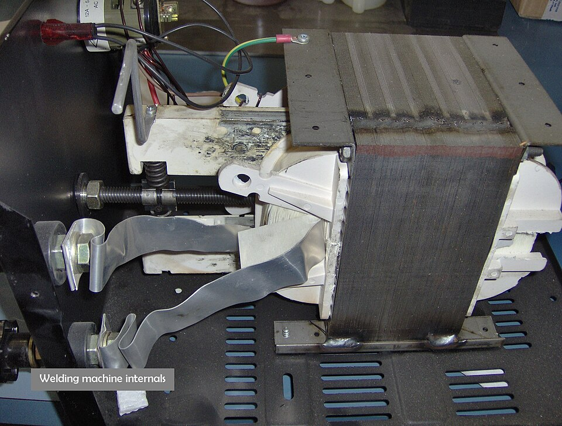

Build a shop-made DC stick welding set
Develop a 230 V inverter stick welder, build the steel case and harnesses by hand, and assemble a pilot unit for qualification.

Photo by Claudio Nardi (Klaudio). Original photograph · CC BY-SA 2.5.

Watch. Trace the input bridge, power conversion and output stage of the commercial inverter shown. Compare each block with the architecture selected for the shop build. Haseeb Electronics · Inverter welder functions and troubleshooting.
Follow the factory assembly. Identify where JASIC builds boards, integrates power assemblies, adds the case and tests the welder. Compare that sequence with the small-batch bench stations below. JASIC · Welding-machine factory tour · Rilon · Board assembly and inspection photographs.
Choose the first machine to sell
Use a single-phase 230 V, 50 Hz DC MMA inverter as the first design. Set a provisional maximum of 120 A and a 35% duty target at that current for indoor fabrication shops. Bring three real jobs to a welder and record rod type and size, material thickness, time under arc and the site's supply. Use that to set the continuous-current target and decide which electrode ranges you will claim. Keep MIG, TIG and outdoor ratings for later models.
At the conventional stick-welding load, use U2 = 20 + 0.04 × I2 for these design points. At 120 A the target is 24.8 V and 2.98 kW of output. With assumed 85% efficiency and true power factor of 0.90, input current during that load is about 16.9 A at 230 V and 19.5 A at an illustrative 200 V if both assumptions still hold. The on-load heat loss is about 525 W. These calculations set targets for supply, cooling and test equipment. Measure actual input, power factor, inrush and losses on the finished design before selecting the cord, plug and installation requirements. A ten-minute cycle at 35% represents 3.5 minutes on load and 6.5 minutes off load under the applicable test conditions. STMicroelectronics · Conventional MMA load calculation · Fronius · Commercial nameplate and duty cycle.
| Training design point | Conventional load | Output power |
|---|---|---|
| 60 A | 22.4 V | 1.34 kW |
| 85 A | 23.4 V | 1.99 kW |
| 120 A | 24.8 V | 2.98 kW |
Design the power source and choose what to make in-house
Plan the chain from mains entry and protection through EMI filtering, rectification, inrush control and the DC bus. An IGBT bridge and isolated gate drivers switch the high-frequency transformer. On the secondary, fast rectifiers and an output choke feed the electrode and work-return sockets. A current sensor closes the regulation loop. Auxiliary supplies, temperature sensors and hardware overcurrent shutdown support the controller. STMicroelectronics · Welding inverter architectures · T21 · Converters and control.
| Assembly | First-unit decision and evidence |
|---|---|
| Power electronics | For a first pilot, source a documented 230 V OEM inverter assembly including matched magnetics and controller, or have your power-electronics engineer release your own PCB and transformer design. Obtain the interface drawing, terminal assignments, output curves, airflow and sensor requirements, approved parts list and change-control terms. |
| Own inverter design | Start with bridge topology, bus operating range and surge cases. Specify transformer volt-seconds, saturation margin and insulation system, switch and diode losses, output choke ripple, short-circuit protection and current-loop stability. Verify each stage on an isolated development rig before releasing transformer winding drawings, PCB layout, firmware and calibration instructions. |
| Case and harnesses | Make the chassis, covers, handles, air baffles and labelled harnesses from your own drawings. Buy the rated cord set, switch, output sockets, fan and insulating barriers to the approved BOM. Keep welding return separate from protective earth according to the approved design. |
| Setpoints and ratings | Prove the stable current range, open-circuit voltage and any voltage-reduction function, short-circuit response and thermal trip behaviour. Set the EMC classification and duty curve before drafting the final rating plate. |
Work the inverter calculations before ordering a board
Study the two-switch forward topology in ST's UM0933. Figure 3 shows the power circuit and Figure 4 the analogue controller. AN4638 gives component stress equations and measured results from two larger single-phase inverter platforms. Use those schematics to trace where feedback and hardware faults enter the controller and where energy returns to the bus during transformer reset. Compare those paths with the bridge topology before choosing a PCB design. STMicroelectronics · Evaluation board schematics · STMicroelectronics · Forward-converter stress and test data.
- Set the bus envelope. For a capacitor-input rectifier without boost PFC, 230 V RMS has a theoretical peak near 325 V. At 253 V RMS the peak is about 358 V. Account for ripple, sag, surges and measured switching overshoot when selecting the bus components and semiconductor voltage margins.
- Estimate duty and magnetics. In an ideal continuous-current forward converter, output voltage is approximately bus voltage × secondary-to-primary ratio × switching duty. At an illustrative 250 V bus trough and a 1:4 turns ratio, 24.8 V requires about 40% switching duty before losses. Check the real duty requirement at low line against transformer reset. Use worst-case primary voltage and on-time to check core flux, and use choke voltage and on-time to estimate ripple. Switching duty at the transformer is a separate quantity from the ten-minute welding duty rating.
- Prove the control and failure response. On a low-voltage development fixture, inject commanded current and sensor signals. Confirm drive is inhibited during startup, excessive primary current, missing feedback and thermal trips. Record the bounded hot-start or anti-stick behaviour if included. Use the reviewed prototype procedure to check gate timing, current ramp, transformer reset, switching overshoot and temperatures at the real load.
Release the schematic, approved BOM, transformer construction and insulation drawing, PCB files, firmware or controller settings, test limits and enclosure drawing as one revision. The worked values are estimates for engineering review and depend on the actual parts and layout.
Build the first unit by hand
Build an unpowered sample using actual parts or mechanical dummies. The design release drawing must give sheet thickness, bend allowances, hole offsets, fastener torque, minimum electrical clearances and the airflow path for the chosen module. An approved module's outline and safety instructions drive the enclosure dimensions.
- Lay out the case. Put input entry and protective earth near the rear. Place the electrode and work-return sockets on the front. Lay out the mains/bus and isolated areas with barriers and routing that maintain the design's clearance and creepage after assembly and servicing. Allow room for tools, cable bends and wall clearance at openings. Make a cardboard mock-up and lay actual components against it.
- Make the steel parts. Mark the base, end panels, vent openings, handle reinforcement and lid from the same reference edges. Shear and bend the blanks with a local fabricator or manual brake. Clamp the parts for drilling, deburr and trial-fit the lid, fan guards and baffles. Inspect the earth-bond area and thread fit after coating.
- Build and inspect harnesses. Use the released wire lengths, gauges, terminals, insulation and crimp tools. Build on a pegboard, label the ends and check continuity and pin assignments against the drawing. Record crimp and pull-test evidence as specified. Keep mains leads, gate/sense leads and welding output conductors in their approved routes.
- Assemble and close. With power removed, fit the approved module, connectors, earth bond, fan, barriers and controls using the specified torque and hardware. Keep lids, screws and wiring away from charged or hot parts and the fan. Check that the production lid, guards, vents and baffles are installed before any powered test.
- Inspect the build against the drawing. Have a second person check conductor routing, connector locks, earth bonds, insulation barriers, socket polarity, strain relief and clearances. Sign the build record before moving the unit to the qualified test bench. The test technician owns first power, stored-energy isolation and the guarded load stand.
Transfer the approved hole pattern to a drill jig and make a harness board after the first fit check. Keep the first accepted assembly as a reference. Log the revision and labour minutes at chassis, harness, assembly and test stations so the next units expose variation in the process.
W10 · Load-test, qualify and release the pilot batch for sale